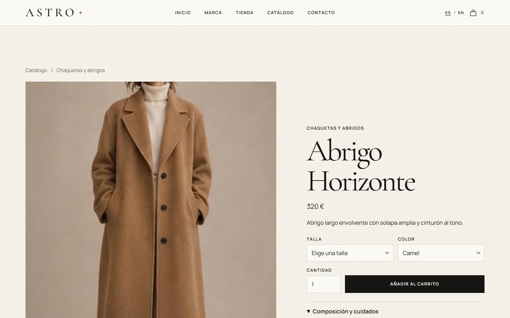
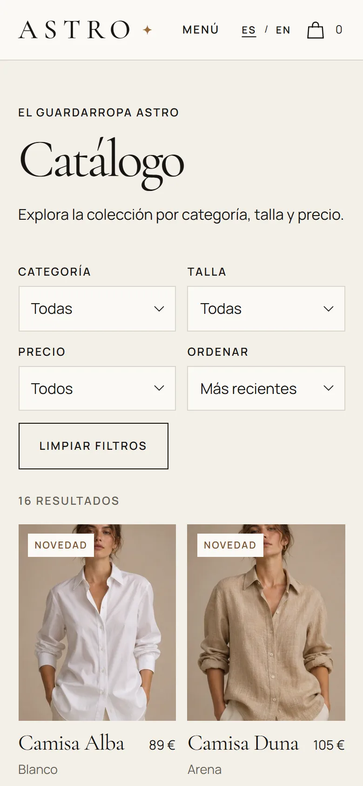

Moda · E-commerce
ASTRO

Proyecto de referencia / concepto: marca, datos y pagos son de demostración.
El reto
Llevar el lujo silencioso a una tienda de moda fácil de explorar e instalar.
La solución
Minimalismo editorial con fondos hueso, titulares con serif, detalles en bronce e imágenes de producto generadas con IA.
- Hueso
#F3EFE8 - Tinta
#161514 - Bronce
#9C6B3C
Tipografías · Cormorant Garamond + Manrope
Funcionalidades
- Portada editorial, presentación de marca y tienda por categorías.
- Catálogo con filtros por categoría, talla y precio, y opciones de orden.
- 16 fichas de producto con tallas, colores y galería.
- Carrito persistente, checkout de demostración con confirmación y contacto.
- Experiencia bilingüe ES/EN y PWA con modo sin conexión y botón de instalación.
Galería
Capturas del proyecto


Siguiente proyecto
WOOK